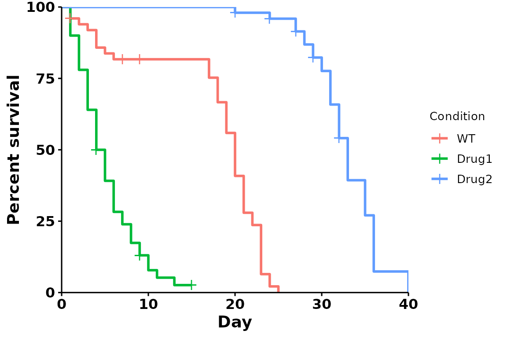
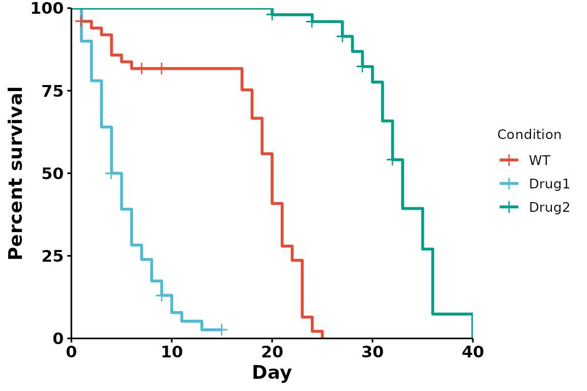
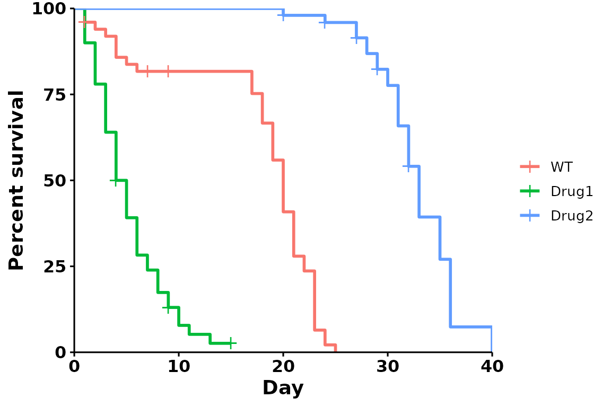
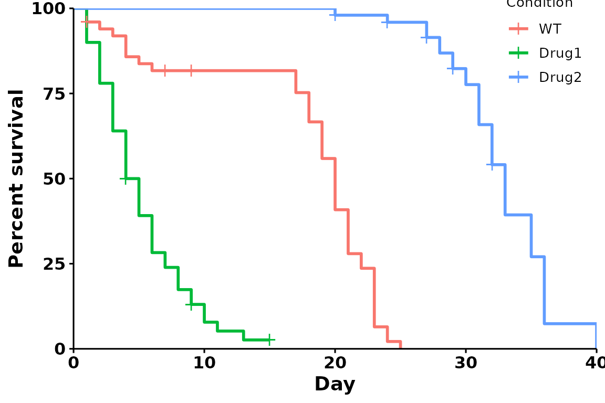

Customizing Plots
customizing-plots.Rmdggbulksurv offers several customization options:
- Subsetting data
- Colors
- Legend title and position
- p-value annotations
This tutorial will go through several most commonly used
customizations. To see all possible options, type
?run_bulksurv() in the console.
# Load sample_data (the fictional dataset)
data(sample_data)
dat <- sample_dataThe default
For comparison, here’s the default plot:
p <- run_bulksurv(dat,
print_stats = FALSE)
A customized survival curve
Here is an example of a highly customized survival curve:
p <- run_bulksurv(dat,
sample_order = c("WT", "Drug1", "Drug2"), # Custom order
print_stats = FALSE, # Don't print stats
palette = c("black", "red", "purple"), # Custom colors
legend.title = "", # Remove legend title ("Condition")
legend.position = c(0.9, 0.9), # Position legend at top right
add.pval = TRUE # Add pvalue
)
Subsetting data
To compare fewer conditions, change the sample_order
parameter:
p <- run_bulksurv(sample_data,
sample_order = c("Drug1", "WT"), # Compare WT vs Drug1, invert order
print_stats = FALSE)
Changing colors
Brewer palettes
RColorBrewer
provides a list of useful, aesthetically pleasing palettes that are
frequently used in R. To use these palettes, change the
palette parameter:
# Using the Set1 brewer palette
p <- run_bulksurv(sample_data,
sample_order = c("WT", "Drug1", "Drug2"),
print_stats = FALSE,
palette = "Set1" # Custom brewer palette
)
Journal palettes
ggsci provides a collection of palettes inspired by scientific publishing groups. These colors can also be used in our plots:
# Using the nature palette
p <- run_bulksurv(sample_data,
sample_order = c("WT", "Drug1", "Drug2"),
print_stats = FALSE,
palette = "npg" # Nature palette
)
Custom colors (name, hexadecimal)
We can also specify colors, either by name (“black”, “blue”), or by hexadecimal value (“#80080”):
# Using manual colors
p <- run_bulksurv(sample_data, sample_order = c("WT", "Drug1", "Drug2"),
print_stats = FALSE,
palette = c("black", "red", "#800080") # Custom colors
)
Legends
Remove legend title
p <- run_bulksurv(sample_data,
sample_order = c("WT", "Drug1", "Drug2"),
print_stats = FALSE,
legend.title = "" # Remove the legend title
)
Specify legend position
Specifying a position (right, left,
bottom or top) with
legend.position:
p <- run_bulksurv(sample_data,
sample_order = c("WT", "Drug1", "Drug2"),
print_stats = FALSE,
legend.position = "bottom" # Set legend at bottom
)Note that run_bulksurv returns the plot as a
ggplot object, so you can further customize it if
required:
p +
ggplot2::theme(legend.position = "bottom") # Change legend position to be at bottom
Specify legend coordinates
Specific coordinates can also be used. For bottom left, use
legend.position = c(0,0); for top right, use
legend.position = c(1,1).
p <- run_bulksurv(sample_data,
sample_order = c("WT", "Drug1", "Drug2"),
print_stats = FALSE,
legend.position = c(0.9, 0.9))
P-value and median survival line
To add the median survival line and pvalues, pass the following
parameters within run_bulksurv():
- median survival line:
add.median.survival = TRUE" - pvalue annotation:
add.pval = TRUE
To change the p-value adjustment method, use
p_adjust_method.
p <- run_bulksurv(sample_data,
sample_order = c("WT", "Drug1", "Drug2"),
print_stats = FALSE,
add.median.survival = TRUE, # Add median survival
p_adjust_method = "bonferroni", # Change padj method
add.pval = TRUE # Add pvalue
)
#> Warning in geom_segment(aes(x = 0, y = max(y2), xend = max(x1), yend = max(y2)), : All aesthetics have length 1, but the data has 3 rows.
#> ℹ Please consider using `annotate()` or provide this layer with data containing
#> a single row.Adding confidence intervals
p <- run_bulksurv(sample_data, sample_order = c("WT", "Drug1", "Drug2"),
print_stats = FALSE,
add.conf.int = TRUE # Add confidence interval
)Returning data
By default, run_bulksurv() returns a
ggplot2 object for easy plot customization.
If you want to return the pivoted data, summary statistics and the
plot object, use returnData = TRUE. This will return all
data and plots as a list object.
df_survival <- run_bulksurv(dat, returnData = TRUE)
names(df_survival)
#> [1] "data" "plot" "median_survival" "logrank"
#> [5] "pairwise"Accessing the individual elements:
head(df_survival$data) # pivoted data
#> # A tibble: 6 × 7
#> x.x condition day sex.x status x.y sex.y
#> <int> <fct> <int> <chr> <dbl> <int> <chr>
#> 1 2 WT 1 M 0 NA NA
#> 2 NA WT 1 NA 1 2 M
#> 3 NA WT 1 NA 1 2 M
#> 4 NA Drug1 1 NA 1 28 M
#> 5 NA Drug1 1 NA 1 28 M
#> 6 NA Drug1 1 NA 1 28 M
head(df_survival$median_survival) # median survival
#> Call: survfit(formula = Surv(day, status) ~ condition, data = df_isurv)
#>
#> n events median 0.95LCL 0.95UCL
#> condition=WT 50 47 20.0 19 21
#> condition=Drug1 50 46 4.5 4 6
#> condition=Drug2 50 42 33.0 32 35
head(df_survival$logrank) # logrank test
#> $n
#> groups
#> condition=WT condition=Drug1 condition=Drug2
#> 50 50 50
#>
#> $obs
#> [1] 47 46 42
#>
#> $exp
#> [1] 31.24899 12.48336 91.26765
#>
#> $var
#> [,1] [,2] [,3]
#> [1,] 19.228227 -4.154711 -15.073516
#> [2,] -4.154711 8.768527 -4.613816
#> [3,] -15.073516 -4.613816 19.687333
#>
#> $chisq
#> [1] 186.0854
#>
#> $pvalue
#> [1] 3.909058e-41
head(df_survival$pairwise) # pairwise logrank with p-value correction
#> $method
#> [1] "Log-Rank test"
#>
#> $data.name
#> [1] "df_isurv and condition"
#>
#> $p.value
#> WT Drug1
#> Drug1 2.291558e-14 NA
#> Drug2 3.367080e-24 3.36708e-24
#>
#> $p.adjust.method
#> [1] "BH"